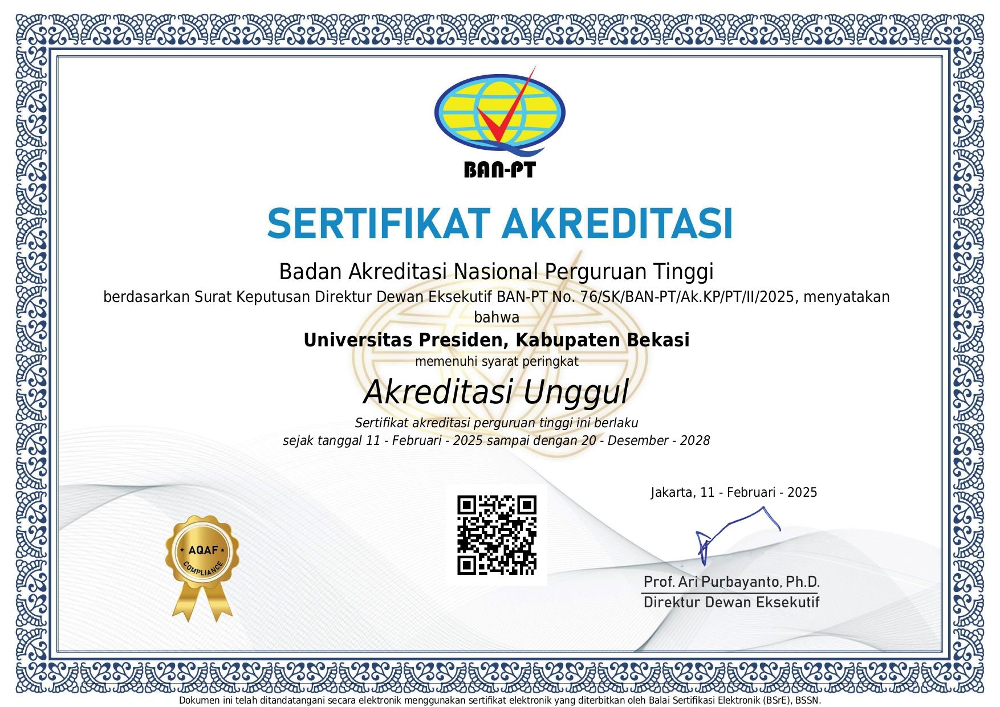

Instrument AMI
Pengembangan instrumen Audit Mutu Internal untuk mendukung evaluasi mutu yang lebih terarah.
Work in progressDirektorat Penjaminan Mutu Internal (DPMI) merupakan unit kerja strategis di lingkungan universitas yang bertugas mengawal, mengendalikan, dan meningkatkan mutu penyelenggaraan pendidikan tinggi secara berkelanjutan (Continuous Quality Improvement).
Sebagai penggerak utama Siklus PPEPP (Penetapan, Pelaksanaan, Evaluasi, Pengendalian, Peningkatan), DPMI berperan aktif dalam pengembangan standar Sistem Penjaminan Mutu Internal (SPMI), pelaksanaan Audit Mutu Internal (AMI), serta pendampingan akreditasi nasional dan internasional. Dengan demikian, DPMI memastikan seluruh proses peningkatan mutu berjalan secara substantif, terukur, dan terintegrasi di seluruh lini universitas.
Secara umum, peran utama DPMI berfokus pada empat pilar strategis dalam menjamin dan meningkatkan mutu perguruan tinggi secara berkelanjutan (Continuous Quality Improvement), yaitu:
Inisiatif utama DPMI untuk mendukung pelaksanaan penjaminan mutu secara terintegrasi.
Pengembangan instrumen Audit Mutu Internal untuk mendukung evaluasi mutu yang lebih terarah.
Work in progressPelaksanaan AMI secara digital melalui President University Information System.
Kunjungi Portal PUISDokumen standar mutu sebagai acuan pelaksanaan penjaminan mutu di lingkungan universitas.
Lihat Standar SPMI